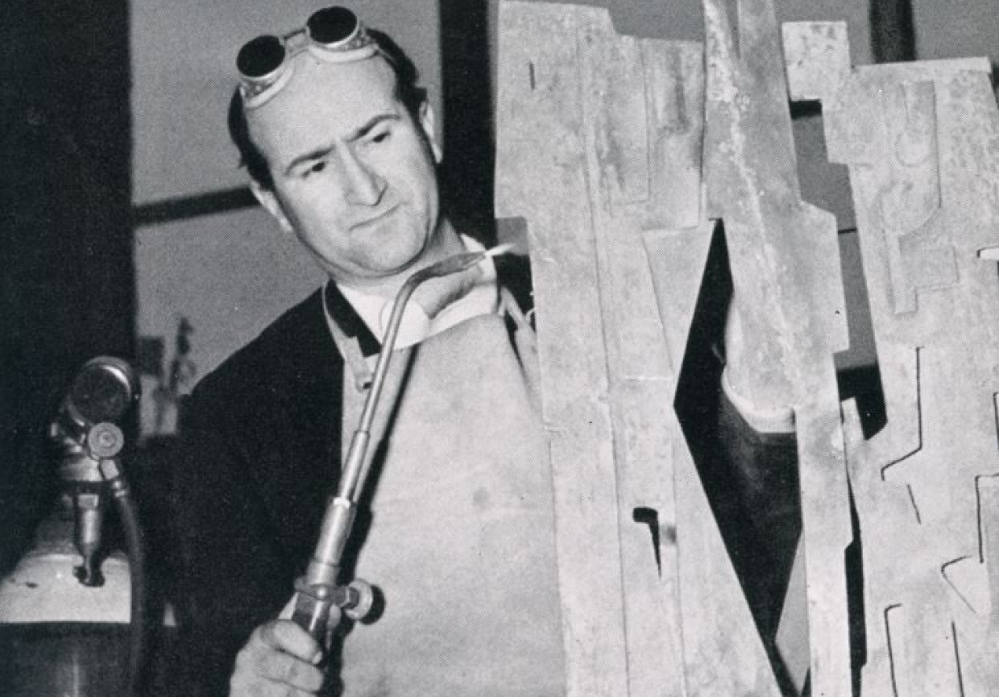

Pietro Consagra
Scultore e scrittore italiano, è stato uno dei più prestigiosi esponenti dell'astrattismo italiano. Nato a Mazara del Vallo il 6 ottobre del 1920, compiuti gli studi all'Accademia di Palermo, nel 1944 si trasferì a Roma, dove aderì all'astrattismo partecipando al gruppo Forma 1 (1947), che rivendicava «la libertà di essere ad un tempo marxisti e formalisti», cioè astrattisti. Qui lavorò nello studio di Mazzacurati e in quello di Guttuso, dove conobbe Piero Dorazio, Ugo Attardi, Carla Accardi, Perilli, Guerrini, Turcato e Sanfilippo.
Fu proprio assieme a questi artisti che Consagra preparò nel marzo del 1947 il manifesto del gruppo astrattista "Forma 1", in cui veniva teorizzata la lezione dell'astrattismo, appresa grazie ad un viaggio parigino organizzato dalla gioventù comunista. Così l'artista sintetizzava la sua personale poetica: «Esprimere il ritmo drammatico della vita di oggi con elementi plastici che dovrebbero essere la sintesi formale delle azioni dell'uomo a contatto con gli ingranaggi di questa società, dove è necessaria volontà, forza, ottimismo, semplicità, chiarezza».
L'artista, inizialmente concentrato sulla ricerca dei materiali, ha creato rilievi scultorei quasi bidimensionali come "Piccolo colloquio romano" (1957). Evolvendo verso lamine sottili, ha ideato la "Città frontale", un'utopica proposta urbanistica. Ha realizzato opere monumentali come il "Meeting" a Gibellina e l'arco sull'autostrada. Nel 1981, per la ricostruzione di Gibellina, ha creato la "Porta del Belice", una stella in acciaio inox alta 24 metri.
Insignito della medaglia d'oro come Benemerito della Cultura e dell'Arte dal presidente Carlo Azeglio Ciampi, oltre che scultore, Consagra fu scrittore e critico, collaboratore di molte pubblicazioni d'arte, scrisse La necessità della scultura (1952) , La città frontale e Vita mia (1980) , opera autobiografica, e fu personalità di rilievo nel mondo culturale di un periodo storico di determinante importanza per l'arte italiana, negli anni quaranta, che videro la nascita dell'astrattismo.
Pietro Consagra è morto il 16 luglio 2005 a Milano, città nella quale da dieci anni si era stabilito, all'età di 85 anni, ed è stato seppellito per sua espressa volontà nel cimitero di Gibellina.